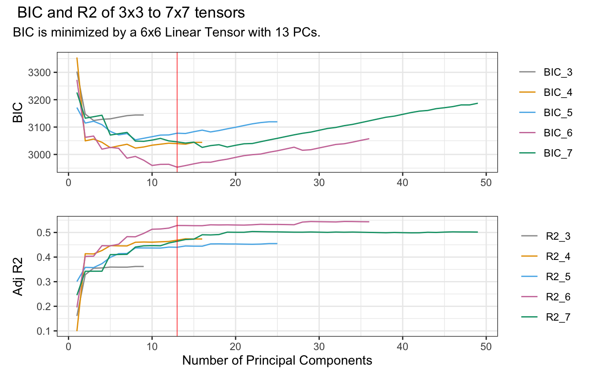
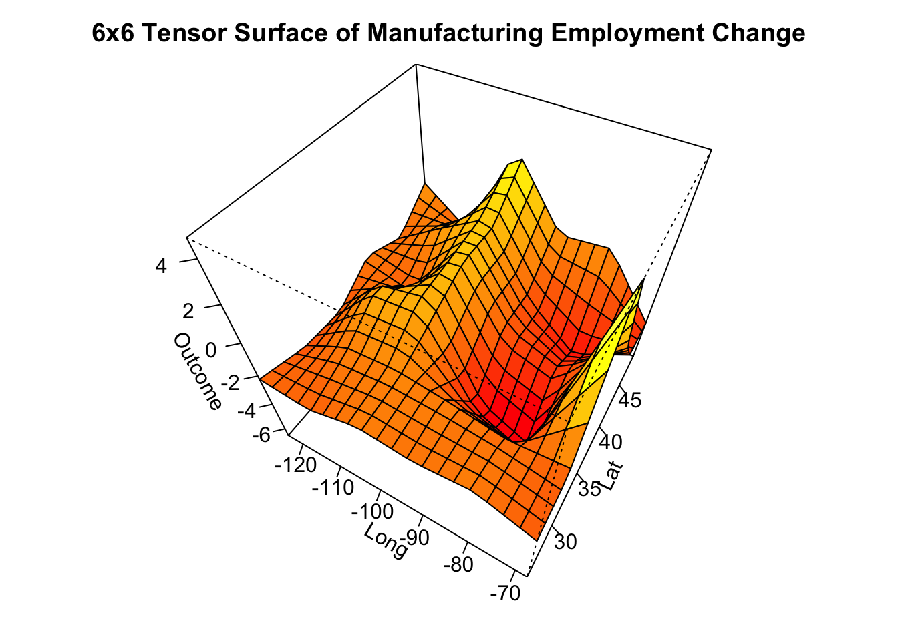
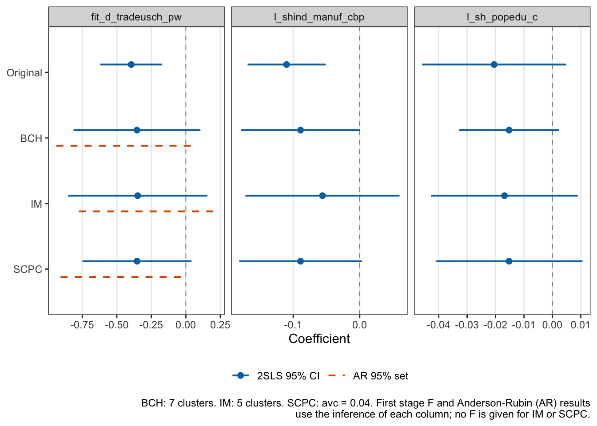

library(spatInfer)
library(modelsummary)
library(ggplot2)
library(tinytable)
data(autor_china)
china=subset(autor_china,t2==1)
fm=d_sh_empl_mfg~l_shind_manuf_cbp+l_sh_popedu_c|d_tradeusch_pw~d_tradeotch_pw_lagspatInfer Tutorial: Instrumental Variables
This tutorial shows how to apply spatInfer to instrumental variable regressions. It assumes that you have worked through the tutorial for least squares regressions: the workflow is the same, so we concentrate on what is new.
spatInfer handles regressions with one endogenous treatment and one instrument. For each kind of standard error correction (heteroskedasticity robust (HC), the large clusters of Bester, Conley, and Hansen (2011) (BCH), the t-test of Ibragimov and Müller (2010) (IM), and the SCPC procedure of Müller and Watson (2022)) it reports two tests of the treatment effect:
The familiar two stage least squares (2SLS) estimate, with its t-test and confidence interval.
The Anderson-Rubin (AR) test (Anderson and Rubin 1949), computed by the reduced form approach of Chernozhukov and Hansen (2008). Its confidence sets remain valid however weak the instrument is.
The workflow has the same three steps as before. First choose the spatial basis. Then, in a single command, use spatial noise placebos to pick the number of clusters (or avc for SCPC), and synthetic outcome tests to check whether the outcome could be spatial noise. Finally, compare the estimates in a table and a plot.
The Data
We use the study of Autor, Dorn, and Hanson (2013) on the effect of Chinese import competition on US local labour markets. The outcome is the change in manufacturing employment as a percentage of the working age population in each of 722 commuting zones. The treatment is the change in Chinese imports per worker. Because US imports may respond to US demand, the treatment is instrumented by Chinese imports to other high income countries. We use the 2000-2007 period, with the controls for the initial share of manufacturing employment and of college educated population, and weight each commuting zone by its share of the national population, as in the original study.
The formula is written as in fixest: outcome ~ controls | treatment ~ instrument. Use outcome ~ 1 | treatment ~ instrument if there are no controls.
1. Choose the Spatial Basis
optimal_basis and plot_basis accept the IV formula directly. As before, the basis is chosen to explain the outcome, so only the left hand side matters.
optimal_basis(fm, china, max_splines=7)
The BIC is minimized by the first 13 principal components of a 6x6 tensor.
plot_basis(fm, china, splines=6, Title="6x6 Tensor Surface of Manufacturing Employment Change")
2. Run Placebo and Synthetic Outcome Tests
The placebo treatments are generated exactly as in the least squares case: the treatment is regressed on the spatial basis, and spatial noise with the estimated structure and range of its residuals is added to the fitted values. An IV regression also needs a placebo instrument. This is generated from each placebo treatment using the estimated regression of the instrument on the treatment, plus its own spatial noise with the structure and range of that regression’s residuals. Each placebo instrument is therefore related to its placebo treatment as strongly as the real instrument is related to the real treatment, while the outcome is untouched. Placebo regressions estimate the effect of a treatment that has none, through an instrument of realistic strength.
The synthetic outcome test replaces the outcome with synthetic outcomes, a quadratic trend in longitude and latitude plus spatial noise, and tests the null hypothesis that the outcome is spatial noise unrelated to the treatment.
iv_placebo_synth runs both tests, taking the same arguments as placebo_synth, with avc added to request SCPC results, which are the slowest to compute. A single call gives 2SLS and AR results for every correction, with a progress bar to follow the simulations.
ps=iv_placebo_synth(fm, china,
splines=6,
pc_num=13,
nSim=1000,
weights="timepwt48",
max_clus=7,
avc=seq(0.02, 0.1, by=0.02))The results are shown with placebo_synth_table, which gives every correction in a single table: a block of 2SLS results followed by a block of Anderson-Rubin results, each running through HC, BCH, IM and SCPC. As in the least squares case, IV regressions use from three clusters upwards, and for SCPC the Clusters/avc column gives avc.
placebo_synth_table(ps, caption="Placebo and synthetic outcome significance levels of import exposure.")| Adj | Clusters/avc | F | Est p | Plac p | Plac 5% | Synth p | CI Width | CI |
|---|---|---|---|---|---|---|---|---|
| Moran=11.64, N=722, Splines=6, PCs=13. | ||||||||
| Treatment: Structure=0, Effective Range=0.05, R2=0.24. Outcome: Structure=0.77, Effective Range=0.1, R2=0.33. | ||||||||
| Noise instrument: Structure=0.09, Effective Range=0.65, R2=0.5. 2SLS estimates, then Anderson-Rubin tests of a zero treatment effect by the reduced form approach, whose 95% confidence sets are valid however weak the instrument and can be unbounded. F is the first stage F statistic, not given for IM or SCPC. | ||||||||
| Estimated and placebo p values, proportion of placebo regressions significant at 5%, synthetic outcome p values and confidence intervals, with HC inference, BCH and IM inference for each number of clusters, and SCPC inference for each value of the average correlation bound avc. Treatment R2 gives the explanatory power of a regression of the treatment on the principal components, and outcome R2 of a regression of the outcome on a quadratic in longitude and latitude. | ||||||||
| 2SLS | 2SLS | 2SLS | 2SLS | 2SLS | 2SLS | 2SLS | 2SLS | 2SLS |
| HC | . | 34.0 | 0.002 | 0.004 | 0.07 | 0.006 | 0.455 | [-0.581, -0.127] |
| BCH | 3 | 152.1 | 0.287 | 0.301 | 0.047 | 0.365 | 2.11 | [-1.41, 0.704] |
| 4 | 100.9 | 0.231 | 0.272 | 0.062 | 0.355 | 1.51 | [-1.11, 0.399] | |
| 5 | 72.4 | 0.154 | 0.161 | 0.047 | 0.2 | 1.12 | [-0.914, 0.206] | |
| 6 | 78.7 | 0.118 | 0.162 | 0.066 | 0.168 | 0.966 | [-0.837, 0.129] | |
| 7 | 47.2 | 0.109 | 0.14 | 0.07 | 0.15 | 0.919 | [-0.813, 0.106] | |
| IM | 3 | 0.234 | 0.192 | 0.027 | 0.17 | 2.53 | [-1.76, 0.769] | |
| 4 | 0.106 | 0.091 | 0.032 | 0.078 | 1.35 | [-1.16, 0.19] | ||
| 5 | 0.127 | 0.107 | 0.031 | 0.121 | 1.01 | [-0.854, 0.156] | ||
| 6 | 0.263 | 0.277 | 0.045 | 0.166 | 7.03 | [-5.24, 1.79] | ||
| 7 | 0.385 | 0.39 | 0.044 | 0.763 | 25.6 | [-7.88, 17.7] | ||
| SCPC | 0.02 | 0.037 | 0.068 | 0.087 | 0.052 | 0.653 | [-0.68, -0.0272] | |
| 0.04 | 0.092 | 0.086 | 0.05 | 0.071 | 0.843 | [-0.775, 0.0678] | ||
| 0.06 | 0.159 | 0.126 | 0.045 | 0.108 | 1.05 | [-0.877, 0.169] | ||
| 0.08 | 0.247 | 0.176 | 0.036 | 0.151 | 1.31 | [-1.01, 0.302] | ||
| 0.1 | 0.294 | 0.178 | 0.031 | 0.149 | 1.46 | [-1.08, 0.374] | ||
| Anderson-Rubin | Anderson-Rubin | Anderson-Rubin | Anderson-Rubin | Anderson-Rubin | Anderson-Rubin | Anderson-Rubin | Anderson-Rubin | Anderson-Rubin |
| HC | . | 34.0 | 0.001 | 0.003 | 0.074 | 0.008 | 0.488 | [-0.634, -0.146] |
| BCH | 3 | 152.1 | 0.265 | 0.286 | 0.057 | 0.344 | 2.31 | [-1.75, 0.56] |
| 4 | 100.9 | 0.218 | 0.258 | 0.069 | 0.354 | 1.6 | [-1.24, 0.358] | |
| 5 | 72.4 | 0.154 | 0.169 | 0.052 | 0.236 | 1.19 | [-0.971, 0.216] | |
| 6 | 78.7 | 0.105 | 0.149 | 0.07 | 0.182 | 1.01 | [-0.911, 0.103] | |
| 7 | 47.2 | 0.083 | 0.121 | 0.069 | 0.157 | 0.999 | [-0.939, 0.0599] | |
| IM | 3 | 0.162 | 0.129 | 0.024 | 0.136 | 3.48 | [-3.14, 0.338] | |
| 4 | 0.102 | 0.088 | 0.034 | 0.084 | 1.51 | [-1.15, 0.351] | ||
| 5 | 0.116 | 0.096 | 0.034 | 0.109 | 0.999 | [-0.775, 0.223] | ||
| 6 | 0.048 | 0.046 | 0.048 | 0.036 | 2.24 | [-2.25, -0.00877] | ||
| 7 | 0.048 | 0.04 | 0.042 | 0.039 | 1.73 | [-1.73, -0.00584] | ||
| SCPC | 0.02 | 0.028 | 0.062 | 0.091 | 0.099 | 0.718 | [-0.765, -0.0475] | |
| 0.04 | 0.068 | 0.075 | 0.059 | 0.103 | 0.999 | [-0.968, 0.0312] | ||
| 0.06 | 0.151 | 0.124 | 0.048 | 0.163 | 1.21 | [-1.04, 0.174] | ||
| 0.08 | 0.233 | 0.167 | 0.043 | 0.211 | 1.68 | [-1.35, 0.323] | ||
| 0.1 | 0.278 | 0.176 | 0.037 | 0.209 | 1.98 | [-1.57, 0.412] | ||
The columns are the same as before, with one addition: F is the first stage F statistic of the instrument, computed with the same standard error correction and number of clusters as the row. Clustered F statistics computed from a few large clusters vary a lot, but all are well above conventional thresholds here, so weak instruments are not a concern in this example.
The Moran statistic of the reduced form residuals is 11.6, far above 2, so we need spatially robust standard errors. Notice, however, that the structure of the treatment residuals is almost zero (0.005): once the spatial basis has removed the broad trends, import exposure has little spatial correlation left. Placebo treatments are therefore close to independent noise around a trend, and even HC standard errors reject at only 7%. The placebo test is less demanding here than in the mobility example, so the synthetic outcome test below carries more weight. We begin with the 2SLS block. With BCH, seven clusters have 7% of placebos significant at 5%, and we choose them. The estimated p value is 0.11, against 0.0009 for the original regression clustered by state.
IM is conservative, with fewer than 5% of placebos significant for every number of clusters. With six or seven clusters, however, the confidence intervals become very wide. 2SLS has to be estimated within each cluster, and with small clusters the instrument is weak inside some of them, which makes the cluster estimates erratic. We use five clusters, which give the narrowest interval.
For SCPC, avc of 0.04 gives 5.0% of placebos significant at 5%, while 0.02 gives 8.7%. We choose 0.04, with an estimated p value of 0.09.
Turning to the Anderson-Rubin block: because the instrument is strong, every AR confidence set is a bounded interval, close to the corresponding 2SLS interval and slightly wider. The placebo rejection rates are also similar to those of 2SLS, so the same choices work: seven BCH clusters (p = 0.08), and avc of 0.04 for SCPC (p = 0.07). The IM rows show the advantage of the reduced form. AR with IM only requires least squares regressions on the instrument within each cluster, which are well behaved however weak the instrument is in some clusters. So its confidence intervals stay reasonable with six or seven clusters, where IM for 2SLS breaks down. To keep the comparison with 2SLS simple we stay with five clusters, where the AR p value is 0.12.
Finally, the Synth p column. The synthetic outcome noise has a strong structure of 0.77, so this is a demanding test. At the settings chosen by the placebo test, the synthetic outcome p values are 0.15 for 2SLS with seven BCH clusters, 0.12 for IM with five clusters, and 0.07 for SCPC with avc of 0.04. The AR values are 0.16, 0.11 and 0.10. The HC p value of 0.006 shows how misleading it would be to ignore the spatial correlation of the outcome. With spatially robust inference we cannot reject, at 5%, that the outcome is spatial noise unrelated to import exposure.
The relevant rows of the large table can be shown as before. (The fact that the three AR intervals are 0.999 is coincidental as a glance at the other rows in the main table shows.)
iv_combined_table(ps, select=c(BCH=7, IM=5, SCPC=0.04))| Adj | Clusters/avc | F | Est p | Plac p | Plac 5% | Synth p | CI Width | CI |
|---|---|---|---|---|---|---|---|---|
| Moran=11.64, N=722, Splines=6, PCs=13. | ||||||||
| Treatment: Structure=0, Effective Range=0.05, R2=0.24. Instrument: Structure=0.09, Effective Range=0.65, R2=0.5. | ||||||||
| Outcome: Structure=0.77, Effective Range=0.1, R2=0.33. | ||||||||
| 2SLS estimates and Anderson-Rubin tests of a zero treatment effect, with estimated and placebo p values, proportion of placebo regressions significant at 5%, synthetic outcome p values, and confidence intervals or Anderson-Rubin confidence sets, for the chosen number of clusters or SCPC average correlation bound avc. F is the first stage F statistic, not given for IM or SCPC. Treatment R2 gives the explanatory power of a regression of the treatment on the principal components, instrument R2 of the instrument on the treatment, and outcome R2 of the outcome on a quadratic in longitude and latitude. | ||||||||
| 2SLS | 2SLS | 2SLS | 2SLS | 2SLS | 2SLS | 2SLS | 2SLS | 2SLS |
| HC | . | 34.0 | 0.002 | 0.004 | 0.07 | 0.006 | 0.455 | [-0.581, -0.127] |
| BCH | 7 | 47.2 | 0.109 | 0.14 | 0.07 | 0.15 | 0.919 | [-0.813, 0.106] |
| IM | 5 | 0.127 | 0.107 | 0.031 | 0.121 | 1.01 | [-0.854, 0.156] | |
| SCPC | 0.04 | 0.092 | 0.086 | 0.05 | 0.071 | 0.843 | [-0.775, 0.0678] | |
| Anderson-Rubin | Anderson-Rubin | Anderson-Rubin | Anderson-Rubin | Anderson-Rubin | Anderson-Rubin | Anderson-Rubin | Anderson-Rubin | Anderson-Rubin |
| HC | . | 34.0 | 0.001 | 0.003 | 0.074 | 0.008 | 0.488 | [-0.634, -0.146] |
| BCH | 7 | 47.2 | 0.083 | 0.121 | 0.069 | 0.157 | 0.999 | [-0.939, 0.0599] |
| IM | 5 | 0.116 | 0.096 | 0.034 | 0.109 | 0.999 | [-0.775, 0.223] | |
| SCPC | 0.04 | 0.068 | 0.075 | 0.059 | 0.103 | 0.999 | [-0.968, 0.0312] | |
3. Compare Estimates
The last step runs each regression with the settings chosen by the placebo tests. iv_regression estimates 2SLS with BCH standard errors (or HC with cov="HC"), and iv_im_regression and iv_scpc_regression use IM and SCPC. Each also gives the AR p value and confidence set computed with the same correction, and iv_regression gives the first stage F statistic. For comparison, the original regression adds census division dummies in place of the spatial basis and clusters by state.
Original=fixest::feols(d_sh_empl_mfg~l_shind_manuf_cbp+l_sh_popedu_c+
reg_midatl+reg_encen+reg_wncen+reg_satl+reg_escen+reg_wscen+reg_mount+reg_pacif|
d_tradeusch_pw~d_tradeotch_pw_lag,
china, weights=~timepwt48, cluster=~statefip)
iv_bch=iv_bch_regression(fm, china, splines=6, pc_num=13, clusters=7, weights="timepwt48")
iv_im=iv_im_regression(fm, china, splines=6, pc_num=13, clusters=5, weights="timepwt48")
iv_sc=iv_scpc_regression(fm, china, splines=6, pc_num=13, avc=0.04, weights="timepwt48")Coefficient Stability
As with OLS, the coefficient estimates within each cluster can be displayed with im_table as a sanity check: a similar, real effect should appear in every region.
im_table(iv_im, type="clusters", caption="2SLS coefficients in each cluster.")| Cluster | (Intercept) | fit_d_tradeusch_pw | l_shind_manuf_cbp | l_sh_popedu_c | Observations |
|---|---|---|---|---|---|
| Coefficient values in each k-medoids cluster. | |||||
| 2SLS in each cluster. Splines=6, PCs=13, N=722. | |||||
| Cluster 1 | 1.49 | 0.11 | -0.20 | -0.04 | 133 |
| Cluster 2 | -8.04 | -0.17 | -0.08 | 0.01 | 184 |
| Cluster 3 | -0.84 | -0.61 | -0.05 | 0.00 | 136 |
| Cluster 4 | 15.25 | -0.16 | 0.02 | -0.04 | 173 |
| Cluster 5 | 3.86 | -0.91 | 0.04 | -0.02 | 96 |
The effect of import exposure is negative in four of the five regions, but its size varies widely, from -0.17 to -0.91, and in one region it is slightly positive. This heterogeneity is what makes the IM confidence interval wide.
Regression Results
iv_regression_table combines the results. Below the coefficients it gives, for each column, the first stage F statistic and the AR p value and confidence set, all computed with that column’s correction.
iv_regression_table(orig=Original, bch=iv_bch, im=iv_im, scpc=iv_sc,
coef_omit="Intercept|^PC[0-9]+$|^reg_",
title="Comparison of standard error corrections for 2SLS.")| Original | BCH | IM | SCPC | |
|---|---|---|---|---|
| BCH: 7 clusters. IM: 5 clusters. SCPC: avc = 0.04. First stage F and Anderson-Rubin (AR) results use the inference of each column; no F is given for IM or SCPC. | ||||
| fit_d_tradeusch_pw | -0.396 | -0.354 | -0.349 | -0.354 |
| [-0.620, -0.171] | [-0.813, 0.106] | [-0.854, 0.156] | [-0.775, 0.068] | |
| l_shind_manuf_cbp | -0.110 | -0.089 | -0.056 | -0.089 |
| [-0.169, -0.051] | [-0.178, 0.000] | [-0.172, 0.060] | [-0.182, 0.004] | |
| l_sh_popedu_c | -0.020 | -0.015 | -0.017 | -0.015 |
| [-0.046, 0.005] | [-0.033, 0.002] | [-0.043, 0.009] | [-0.044, 0.014] | |
| Num.Obs. | 722 | 722 | 722 | 722 |
| First stage F | 33.3 | 47.2 | ||
| AR p | 0.0835 | 0.116 | 0.0678 | |
| AR 95% set | [-0.939, 0.0599] | [-0.775, 0.223] | [-0.968, 0.0312] | |
iv_regression_plot shows the 2SLS confidence intervals of each coefficient and, for the treatment, the AR confidence set of each spatial basis regression. Any unbounded part of an AR set would run to the edge of the panel and end in an arrow.
iv_regression_plot(orig=Original, bch=iv_bch, im=iv_im, scpc=iv_sc,
coef_omit="Intercept|^PC[0-9]+$|^reg_")
Replacing the division dummies with the spatial basis changes the point estimate little, from -0.40 to -0.35. However, once inference allows for the spatial correlation in the data, the p value of the effect of import exposure rises from 0.001 to between 0.09 and 0.13 for 2SLS, and between 0.07 and 0.12 for AR. The confidence intervals now include zero, although they lie mostly below it. The 2SLS and AR results agree closely, as they should with a strong instrument. When the first stage is weak, the AR sets are the ones to rely on.
References
Anderson, T. W., and Herman Rubin. 1949. “Estimation of the Parameters of a Single Equation in a Complete System of Stochastic Equations.” Annals of Mathematical Statistics 20 (1): 46–63.
Autor, David H., David Dorn, and Gordon H. Hanson. 2013. “The China Syndrome: Local Labor Market Effects of Import Competition in the United States.” American Economic Review 103 (6): 2121–68.
Bester, C. Alan, Timothy G. Conley, and Christian B. Hansen. 2011. “Inference with Dependent Data Using Cluster Covariance Estimators.” Journal of Econometrics 165: 137–51.
Chernozhukov, Victor, and Christian Hansen. 2008. “The Reduced Form: A Simple Approach to Inference with Weak Instruments.” Economics Letters 100 (1): 68–71.
Ibragimov, Rustam, and Ulrich K. Müller. 2010. “t-Statistic Based Correlation and Heterogeneity Robust Inference.” Journal of Business and Economic Statistics 28: 453–68.
Müller, Ulrich K., and Mark W. Watson. 2022. “Spatial Correlation Robust Inference.” Econometrica 90 (6): 2901–35.